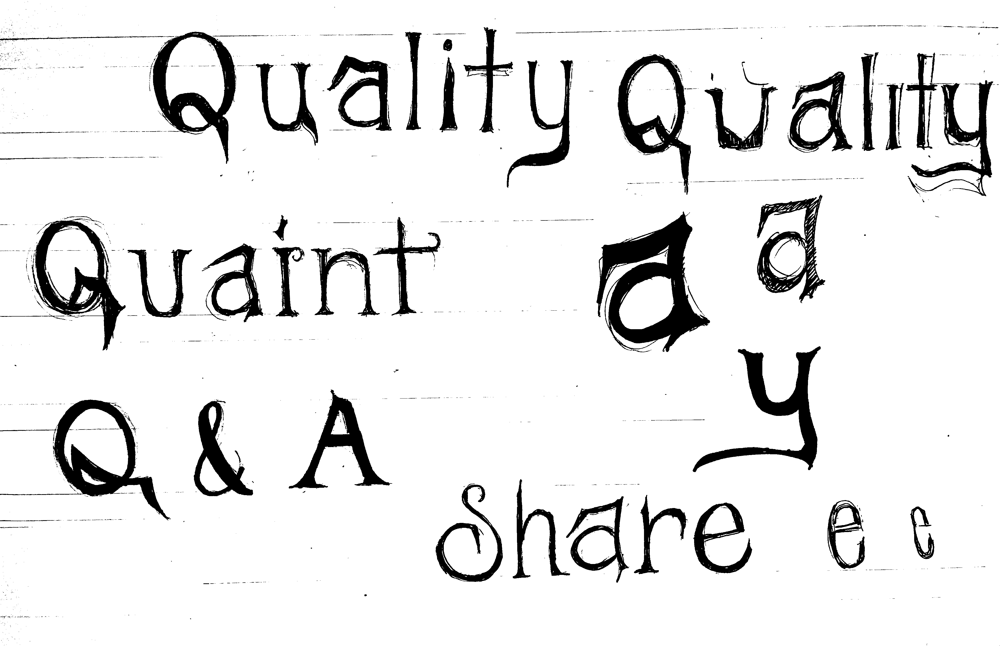
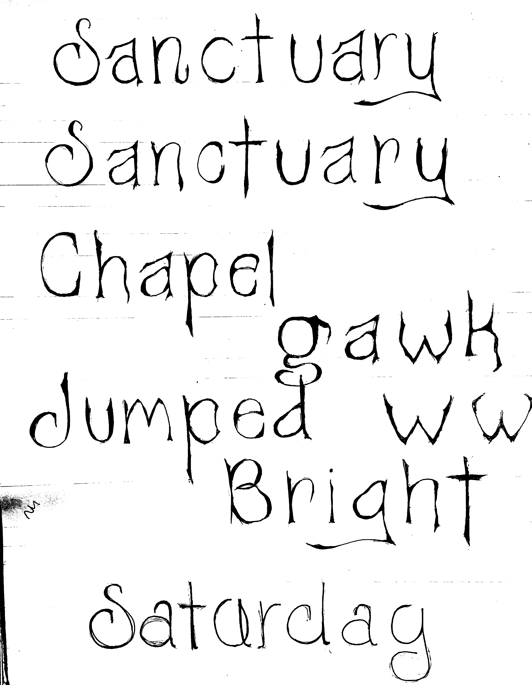
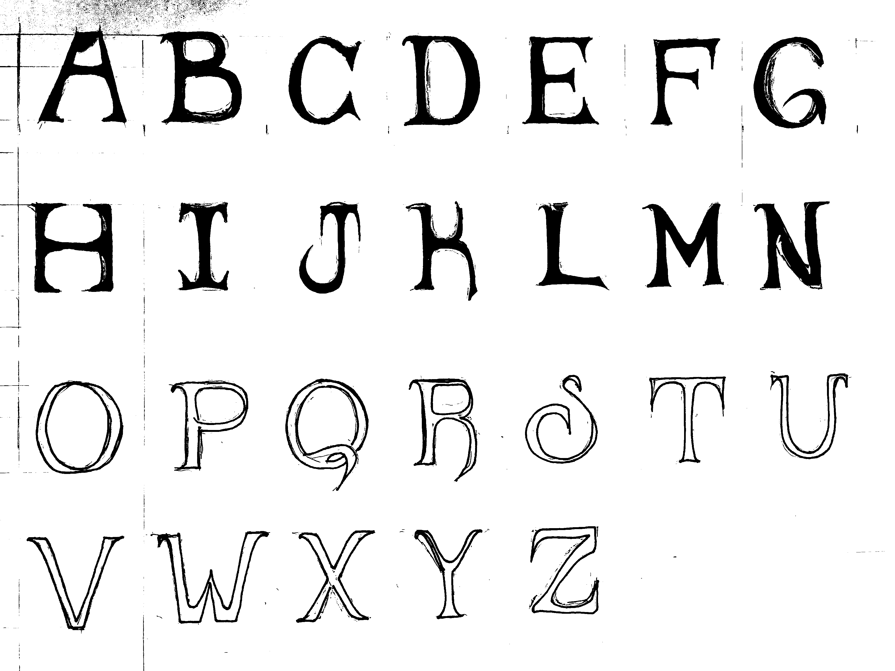

Wisteria Display Typeface
Tools: Adobe illustrator, FontSelf, paper, ink pens
The early sketching for Wisteria began in my typeface design class where I learned the importance of system thinking. My process involved a lot of play. In fact, I thoroughly enjoyed the tediousness of drawing and re-drawing each and every glyph until each part contributed to the whole in a way that satisfied myself. From the start, my goal was to create a type that was both delicately curved, yet sharp at the same time. Ultimately, my final design mimicked the organic and poisenous characteristics of the wisteria tree, a plant recognized for it's twining vines and drooping flowers.
So far, Wisteria consists of upper and lower case, as well as some commonly used puntuation. As a type, it is best used as a display due to the varying weight and illustrative qualities. For example, it could be used for the title on a movie poster or fragrance advertisement.
Phase 1: analog sketching


